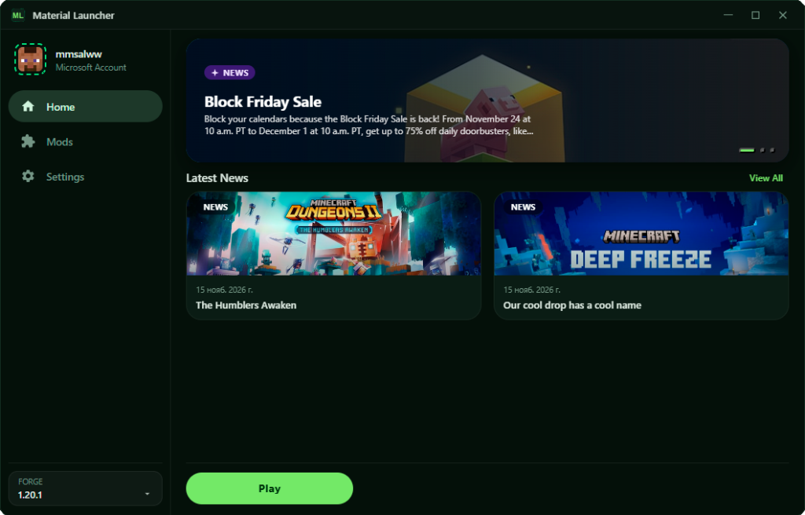
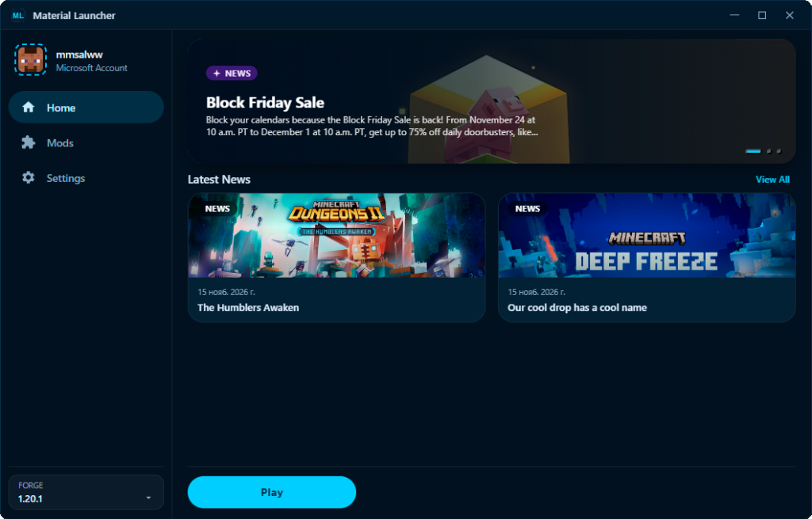
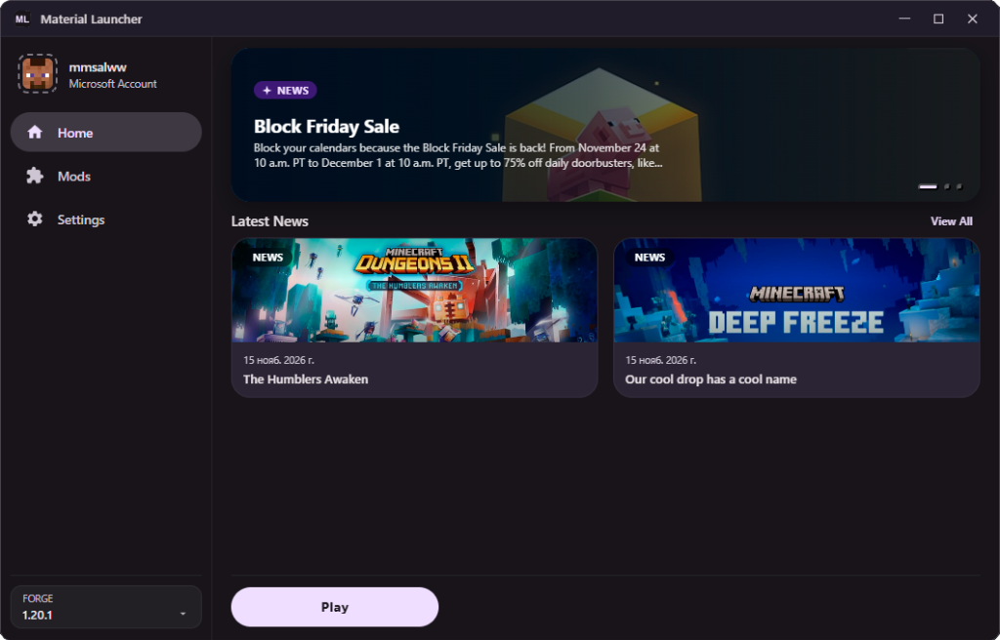
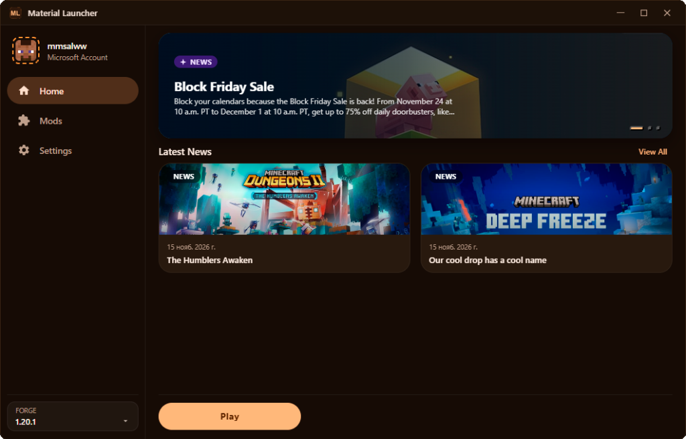
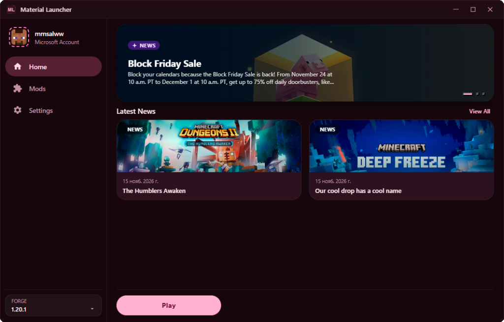

Google Material Design 3
Soft rounded corners, adaptive dark and light themes, accent color palette, and smooth animations on every interaction.





No cluttered menus, banners, or outdated interfaces — just clean Material You and the tools you need at hand.
Soft rounded corners, adaptive dark and light themes, accent color palette, and smooth animations on every interaction.
Search and install mods from Modrinth and CurseForge right inside the launcher, and create separate modpacks for your versions.
Vanilla, Fabric, Forge, NeoForge, and Quilt. Sign in via official Microsoft (OAuth 2.0), Ely.by with skins, or offline mode.
Pick any drive to store versions and mods without cluttering drive C:, with smart file migration or cleanup.
Automatically finds or downloads the right Java version and analyzes crash logs to explain what went wrong.
Full localization in English, Russian, German, French, Spanish, Portuguese, Chinese, and Japanese.
Choose your operating system and preferred package format. All builds are free with no registration required.
Classic setup wizard with folder selection, desktop shortcut, and Start Menu entry.
Single executable file: launch and play from any drive or USB stick without installation.
Standard MSI package for system-wide deployment and Windows management.
Ready-to-run program folder inside a ZIP archive — just extract anywhere.
Runs on any Linux distro without installation. Make it executable and launch.
For Ubuntu, Debian, Linux Mint, Pop!_OS, and derivatives. Install via apt.
For Fedora, openSUSE, Red Hat, and other RPM-based distributions.
Offline Flatpak bundle with permission sandboxing and desktop integration.
Classic Linux archive with the ready-to-run executable.
Portable archive for quick extraction on any Linux system.